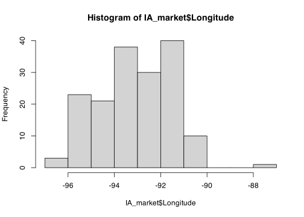
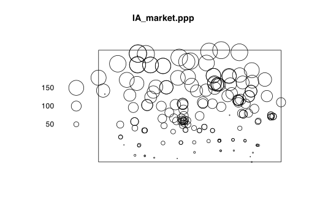

In part 2 (to be uploaded), I show my actual example report analysing farmers markets in Iowa. So you can see what I would actually submit in the next section.
These are my background workings - all my text are things I might think in my head, you don’t need to write all of this. But I hope you can follow this and do something similar for your own work.
My example tutorial is set in Iowa on farmers markets. First, set up libraries
library(sp)
library(sf)
library(tidyverse)
library(tmap)
library(readxl)
library(skimr)
library(spatstat)Now I will read in my data, on farmers markets in Iowa. Sometimes adding in the na option helps R recognise missing values, so I will try that.
## [1] "X" "Y" "FID" "City" "County"
## [6] "Location" "Market_Name" "Open_Dates" "Open_Hours" "State"
## [11] "Weekday"OK, I can see I have the columns above and when I click on the IA_market name in the Environment tab I can see more details. First, I’ll take a quick look at the summary.
## X Y FID City
## Min. :-999.00 Min. :37.29 Min. : 1.0 Length:175
## 1st Qu.: -94.37 1st Qu.:41.36 1st Qu.: 44.5 Class :character
## Median : -93.18 Median :41.71 Median : 88.0 Mode :character
## Mean : -98.37 Mean :41.86 Mean : 88.0
## 3rd Qu.: -91.69 3rd Qu.:42.48 3rd Qu.:131.5
## Max. : -87.12 Max. :43.43 Max. :175.0
## NA's :3 NA's :5
## County Location Market_Name Open_Dates
## Length:175 Length:175 Length:175 Length:175
## Class :character Class :character Class :character Class :character
## Mode :character Mode :character Mode :character Mode :character
##
##
##
##
## Open_Hours State Weekday
## Length:175 Length:175 Length:175
## Class :character Class :character Class :character
## Mode :character Mode :character Mode :character
##
##
##
## From the summary above, I can see some weird issues.
Hmm there is a very small longitude value in X that can’t exist
# get rid of the row with the weird value
# I could also set it to NA
IA_market <- IA_market[which(IA_market$X > -990),]
# and print the summary
summary(IA_market[,c("X","Y")])## X Y
## Min. :-96.56 Min. :37.29
## 1st Qu.:-94.34 1st Qu.:41.36
## Median :-93.10 Median :41.70
## Mean :-93.11 Mean :41.85
## 3rd Qu.:-91.69 3rd Qu.:42.48
## Max. :-87.12 Max. :43.43
## NA's :5OK that looks better.
I don’t need all this data, so let’s keep things neat.
I quite like the glimpse function from tidyverse for this. Here are my columns (same as name command)
## Rows: 166
## Columns: 11
## $ X <dbl> -95.13766, -91.17124, -95.74293, -93.68677, -93.92560, -91…
## $ Y <dbl> 43.36571, 40.81963, 41.04704, 41.61103, 40.62401, 40.53341…
## $ FID <dbl> 1, 2, 3, 4, 5, 6, 7, 8, 9, 10, 11, 12, 14, 15, 16, 17, 18,…
## $ City <chr> "Arnolds Park", "West Burlington", "Glenwood", "Des Moines…
## $ County <chr> "DICKINSON", "DES MOINES", "MILLS", "POLK", "DECATUR", "LE…
## $ Location <chr> "Arnolds Park", "609 S. Gear Avenue", "418 E Sharp St", "4…
## $ Market_Name <chr> "Akron Farmers Market", "Ames - North Grand Farmers Market…
## $ Open_Dates <chr> "06/28/2018 - 09/13/2018", "06/16/2018 - 10/27/2018", "05/…
## $ Open_Hours <chr> "04:30 PM - 06:30 PM", "09:00 AM - 12:00 PM", "04:00 PM - …
## $ State <chr> "IA", "IA", "IA", "IA", "IA", "IA", "IA", "IA", "IA", "IA"…
## $ Weekday <chr> "Thursday", "Saturday", "Wednesday", "Thursday", "Wednesda…IA_market <- IA_market[,c("X","Y","FID",
"City","County",
"Market_Name",
"Weekday")]
summary(IA_market)## X Y FID City
## Min. :-96.56 Min. :37.29 Min. : 1.00 Length:166
## 1st Qu.:-94.24 1st Qu.:41.36 1st Qu.: 44.25 Class :character
## Median :-93.10 Median :41.70 Median : 85.50 Mode :character
## Mean :-93.07 Mean :41.85 Mean : 85.81
## 3rd Qu.:-91.67 3rd Qu.:42.48 3rd Qu.:126.75
## Max. :-87.12 Max. :43.43 Max. :175.00
## County Market_Name Weekday
## Length:166 Length:166 Length:166
## Class :character Class :character Class :character
## Mode :character Mode :character Mode :character
##
##
## Some of my data like market name is going to be unique to each market. Others like weekday could be considered data groups/families. In R this is called a factor.
To know the difference, I am thinking about whether it is useful to make a summary table of counts for that value
So
IA_market$City <- as.factor(IA_market$City)
IA_market$County <- as.factor(IA_market$County)
IA_market$Weekday <- as.factor(IA_market$Weekday)Now when I summarise, I can immediately see that there are 12 markets on Fridays.
## X Y FID City
## Min. :-96.56 Min. :37.29 Min. : 1.00 Des Moines : 7
## 1st Qu.:-94.24 1st Qu.:41.36 1st Qu.: 44.25 Davenport : 5
## Median :-93.10 Median :41.70 Median : 85.50 Cedar Rapids: 4
## Mean :-93.07 Mean :41.85 Mean : 85.81 Ottumwa : 4
## 3rd Qu.:-91.67 3rd Qu.:42.48 3rd Qu.:126.75 Ames : 3
## Max. :-87.12 Max. :43.43 Max. :175.00 Atlantic : 3
## (Other) :140
## County Market_Name Weekday
## POLK : 11 Length:166 Friday :12
## LINN : 8 Class :character Monday :10
## BLACK HAWK: 7 Mode :character Saturday :52
## SCOTT : 7 Sunday : 3
## MARION : 5 Thursday :33
## DES MOINES: 4 Tuesday :25
## (Other) :124 Wednesday:31I know my X and Y data are really latitude and longitude, so I will rename them. to make sure I don’t mess up, lots of printing out
## [1] "X"## [1] "Longitude"## [1] "Y"## [1] "Latitude"## Longitude Latitude FID City
## Min. :-96.56 Min. :37.29 Min. : 1.00 Des Moines : 7
## 1st Qu.:-94.24 1st Qu.:41.36 1st Qu.: 44.25 Davenport : 5
## Median :-93.10 Median :41.70 Median : 85.50 Cedar Rapids: 4
## Mean :-93.07 Mean :41.85 Mean : 85.81 Ottumwa : 4
## 3rd Qu.:-91.67 3rd Qu.:42.48 3rd Qu.:126.75 Ames : 3
## Max. :-87.12 Max. :43.43 Max. :175.00 Atlantic : 3
## (Other) :140
## County Market_Name Weekday
## POLK : 11 Length:166 Friday :12
## LINN : 8 Class :character Monday :10
## BLACK HAWK: 7 Mode :character Saturday :52
## SCOTT : 7 Sunday : 3
## MARION : 5 Thursday :33
## DES MOINES: 4 Tuesday :25
## (Other) :124 Wednesday:31OK I know my data is in Lat/Long, so when I make it spatial, I include the crs code 4326 (yours is almost certainly likely to be the same)
# I know that it was in lat/long originally, hence the crs
IA_market.sf <- st_as_sf(IA_market,
coords=c("Longitude","Latitude"),
crs=4326)
# make a quick plot
tmap_mode("view")
qtm(st_geometry(IA_market.sf))You can see in the plot above that there appears to be one point that is not in Iowa. So now I will look at the long/lat columns. I can also filter my data in the View tab.
Note i’m doing this on the original data not the sf.
## Longitude Latitude
## Min. :-96.56 Min. :37.29
## 1st Qu.:-94.24 1st Qu.:41.36
## Median :-93.10 Median :41.70
## Mean :-93.07 Mean :41.85
## 3rd Qu.:-91.67 3rd Qu.:42.48
## Max. :-87.12 Max. :43.43
I feel that maybe that point at Long ~ -88 is wrong. Let’s take a look.
I’m guessing there’s a typo - so I could just google this and fix it! but for now, let’s remove and try again.
# choose all the other ones, note the <= instead of >
IA_market <- IA_market[which(IA_market$Longitude < -90),]
# RECREATE THE SPATIAL DATA
IA_market.sf <- st_as_sf(IA_market,coords=c("Longitude","Latitude"),
crs=4326)
# make a quick plot
tmap_mode("view")
qtm(IA_market.sf)Much better. Now let’s change to a local map projection of my choice.I am choosing UTM Iowa from Tutorial 9.
# And change to a map projection of your choice.
IA_market.sf.utm <- st_transform(IA_market.sf,3744)
# make a quick plot
tmap_mode("view")
qtm(st_geometry(IA_market.sf.utm))and let’s make it a ppp variable using spatstat. Looking good!
